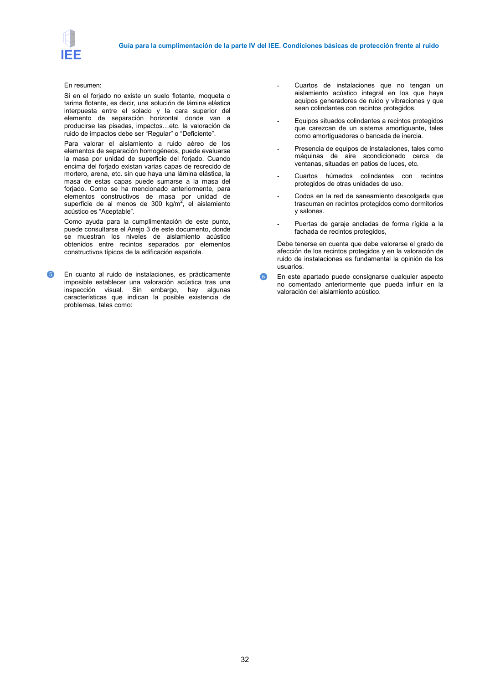

GUIA · Página 32 · versión 2016-11-01
SHA256: 813669d3066c0ff79457d57b80b0512a4fbb248bc5db1f7baf473c369a064738 · página física 32 de 65 · métodos de encabezado
solo si están cotejados.
Formatos: Markdown · JSON de bloques · PDF p. 32 · imagen PNG
Guía para la cumplimentación de la parte IV del IEE. Condiciones básicas de protección frente al ruido 32 En resumen: Si en el forjado no existe un suelo flotante, moqueta o tarima flotante, es decir, una solución de lámina elástica interpuesta entre el solado y la cara superior del elemento de separación horizontal donde van a producirse las pisadas, impactos=etc. la valoración de ruido de impactos debe ser “Regular” o “Deficiente”. Para valorar el aislamiento a ruido aéreo de los elementos de separación homogéneos, puede evaluarse la masa por unidad de superficie del forjado. Cuando encima del forjado existan varias capas de recrecido de mortero, arena, etc. sin que haya una lámina elástica, la masa de estas capas puede sumarse a la masa del forjado. Como se ha mencionado anteriormente, para elementos constructivos de masa por unidad de superficie de al menos de 300 kg/m2, el aislamiento acústico es “Aceptable”. Como ayuda para la cumplimentación de este punto, puede consultarse el Anejo 3 de este documento, donde se muestran los niveles de aislamiento acústico obtenidos entre recintos separados por elementos constructivos típicos de la edificación española. ❺ En cuanto al ruido de instalaciones, es prácticamente imposible establecer una valoración acústica tras una inspección visual. Sin embargo, hay algunas características que indican la posible existencia de problemas, tales como: - Cuartos de instalaciones que no tengan un aislamiento acústico integral en los que haya equipos generadores de ruido y vibraciones y que sean colindantes con recintos protegidos. - Equipos situados colindantes a recintos protegidos que carezcan de un sistema amortiguante, tales como amortiguadores o bancada de inercia. - Presencia de equipos de instalaciones, tales como máquinas de aire acondicionado cerca de ventanas, situadas en patios de luces, etc. - Cuartos húmedos colindantes con recintos protegidos de otras unidades de uso. - Codos en la red de saneamiento descolgada que trascurran en recintos protegidos como dormitorios y salones. - Puertas de garaje ancladas de forma rígida a la fachada de recintos protegidos, Debe tenerse en cuenta que debe valorarse el grado de afección de los recintos protegidos y en la valoración de ruido de instalaciones es fundamental la opinión de los usuarios. ❻ En este apartado puede consignarse cualquier aspecto no comentado anteriormente que pueda influir en la valoración del aislamiento acústico.
